Figura 01
Módulo Biblioteca
Atenção:
Nas rotinas as seguir, o usuário deverá ter atenção para não repetir um cadastro já efetuado. Se a biblioteca possuir mais do que um acervo de um determinado autor ou editora, uma vez cadastrado no sistema, basta pesquisar seu nome e inclui-lo no cadastro. O mesmo deve-se para as demais rotinas, com exceção da rotina ACERVO, pois se a biblioteca possuir dois exemplares ou mais de um acervo, ao cadastra-lo, os demais exemplares deverão ser registrados na quarta aba EXEMPLARES, repetindo seu registro e gerando o código de barras para cada exemplar do acervo.
Neste item será cadastrado o nome da biblioteca, conforme mostra a figura 01.
Figura
01
Neste item será cadastrado todo autor de livro que a biblioteca possuir em seu acervo, conforme mostra a figura 02.
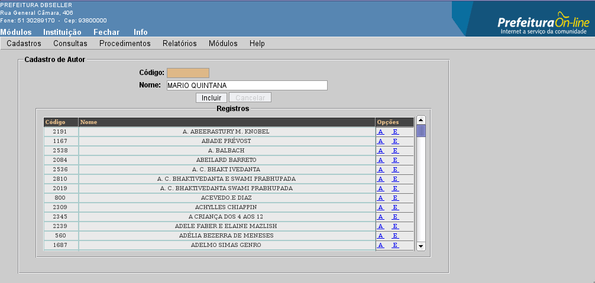
Figura
02
Obs.: O sistema mostrara uma mensagem de aviso quando um autor for cadastrado novamente, não permitindo sua inclusão(figura 03). Uma vez cadastrado o autor, basta pesquisar no sistema para vincula-lo a outro acervo.
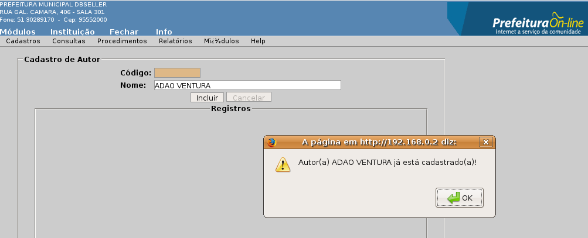
Figura
03
Neste item será cadastrado a maneira que a biblioteca adquiriu determinado acervo, conforme mostra a figura 04.
Ex.: Compra, doação particular, doação pública e etc.

Figura
04
Neste item será cadastrado o tipo de leitor, conforme mostra a figura 05.

Figura
05
Campos
Nome da categoria: Aluno, professor, funcionário, público, etc.
Quantidade de livros: Quantidade de livros que a categoria pode retirar no mesmo período.
Tempo de empréstimo: Quantidade de dias que a categoria pode ficar com os acervos.
Na classificação literária será informado todo o tipo de tema que um acervo aborda, conforme mostra a figura 06.
Ex.: Literatura Infantil, Brasileira, Estrangeira e etc.

Figura
06
Neste item será cadastrada todas as editoras que publicaram os livros existentes na biblioteca, conforme mostra a figura 07.
Ex.: Editora Abril, Novatec, Brasil e etc.
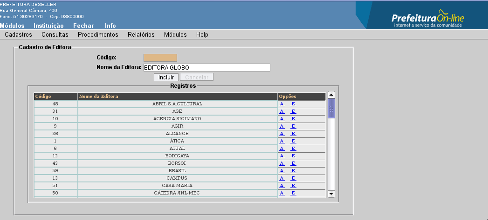
Figura
07
Obs.: Uma vez cadastrada a editora, basta pesquisar no sistema para vincula-la a outro acervo. O sistema emitirá um aviso na tela caso a editora que esta sendo cadastrada já existir, não permitindo a inclusão da mesma(figura 08).

Figura
08
Neste item serão cadastrados todos os armários e estante onde estão guardados os acervos, como também a abreviatura da localização e a capacidade de exemplares para a mesma, conforme mostra a figura 09.
Ex.: Estante 01–prateleira 01, estante 01–prateleira 02, armário 01–prateleira 03 e etc.

Figura
09
Neste será cadastrado os itens que a biblioteca possui, conforme mostra a figura 10.
Ex.: Livros, revistas, revistas em quadrinhos e etc.

Figura
10
Aba Dados Gerais:
Neste item será cadastrado os dados do acervo, como título, data de edição e etc.
Preencha os campos, conforme mostra figura 11.
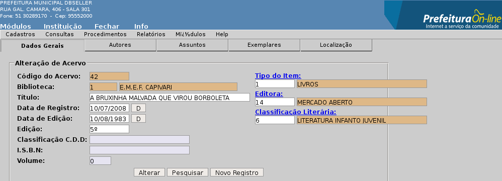
Figura
11
Campos:
Código do Acervo: Código gerado automaticamente pelo sistema.
Biblioteca: O sistema automaticamente busca o nome da biblioteca.
Título: Deverá ser informado o nome do acervo.
Data de Registro: O sistema informa automaticamente a data atual.
Data de Edição: Data na qual o acervo foi editado
Edição: Número da edição do acervo.
Classificação C.D.D: A Classificação Decimal de Dewey (CDD ou DDC na sigla em inglês, também conhecido como Sistema Decimal de Dewey) é um sistema de classificação de bibliotecas, número encontrado na página de dados bibliográficos do livro. A CDD organiza todo o conhecimento em dez classes principais que, prosseguem do metafísico (filosofia e religião) ao mundano (história e geografia).
I.S.B.N: International Standard Book Number, informado na página de dados bibliográficos do livro, mais conhecido pela sua sigla ISBN, é o Número Padrão Internacional de Livro, um sistema identificador único para livros e publicações não periódicas. O fundamento do sistema é identificar numericamente um livro segundo seu título, autor, país (ou código de idioma) e a editora, individualizando inclusive edições diferentes.
Volume: Número do volume do acervo.
Tipo do item: Ao clicar no link “Tipo do item”, abrirá uma função de pesquisa, busque e selecione o tipo de item no qual se encaixa o acervo (figura 12).

Figura
12
Editora: Ao clicar no link “Editora”, abrirá uma função de pesquisa, busque e selecione a editora do acervo (figura 13).
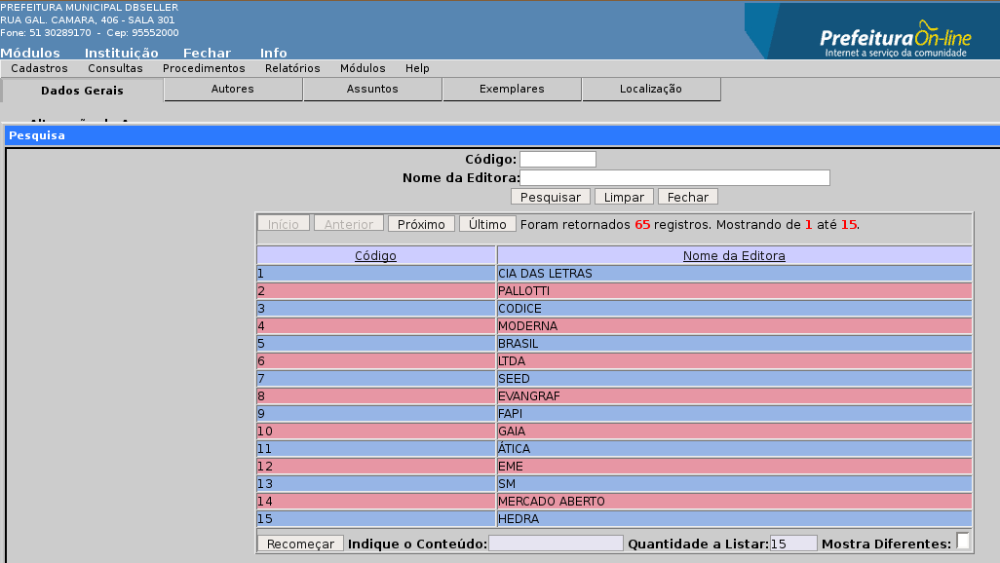
Figura
13
Classificação literária: Ao clicar no link “Classificação literária”, abrirá uma função de pesquisa, busque e selecione a Classificação literária do acervo (figura 14).

Figura 14
Aba Autores:
Será feito o cadastro do autor do acervo, conforme mostra a figura 15.

Figura
15
Campos
Acervo: Código gerado na inclusão do acervo e seu nome.
Autor: Ao clicar no link “Autor”, abrirá uma função de pesquisa, busque e slecione o o autor do livro (figura 16).

Figura
16
Aba Assuntos:
Será informado o assunto principal do acervo, conforme mostra a figura 17.
Ex.: Romance, policial, poesia, novela e etc.

Figura
17
Aba Exemplares:
Neste item será gerado o código de barras do acervo e informada a data de aquisição de cada exemplar deste acervo, conforme mostra a figura 18.

Figura
18
Campos
Código do Exemplar: O sistema gera automaticamente.
Acervo: Campo informado automaticamente pelo sistema.
Cód. Barras: Clique no botão “Gerar Código” para que o sistema gere um código de barras para o acervo.
Data de Aquisição: Informe a data em que o acervo foi adquirido.
Tipo de Aquisição: Ao clicar no link “Tipo de Aquisição”, abrirá uma função de pesquisa, busque e selecione o Tipo de Aquisição do acervo (figura 19).

Figura
19
Aba Localização
Neste item será cadastrado a localização exata do acervo, onde, ao consultar o mesmo no sistema, o usuário saberá exatamente qual a estante, prateleira e ordem em que esta guardado, conforme mostra a figura 20.
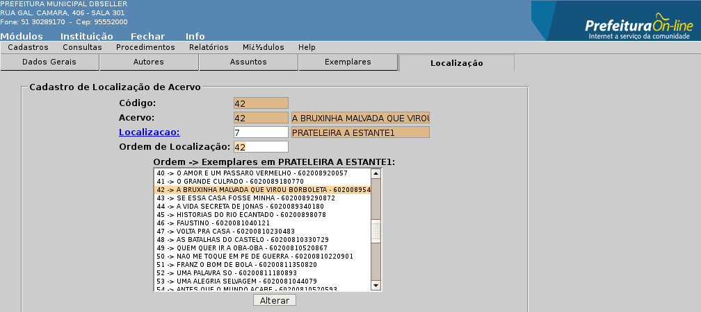
Figura
20
Campos
Localização: Ao clicar no link “Localização”, abrirá uma função de pesquisa, busque e selecione a localização do acervo (figura 21).
Ordem de Localização: Digite o próximo número de ordem da localização selecionada.
 Figura
21
Figura
21
Ao acessar este menu, o sistema possibilitará a alteração de qualquer campo descrito acima, de todas as abas, dando total flexibilidade para correção de erros de cadastro, basta pesquisar o acervo desejado e alterar os campos.
Aba Leitor:
Primeiramente será feita uma pesquisa do leitor, ao clicar no link “Leitor”, abrirá uma função de pesquisa com filtros onde será informado o nome do leitor para pesquisa (figura 22), assim efetuado, deverá ser dado um clique no nome desejado, automaticamente seus dados serão preenchidos pelo banco de dados da prefeitura, após conferir se os dados estão corretos e só incluir, conforme mostra a figura 23.

Figura
22
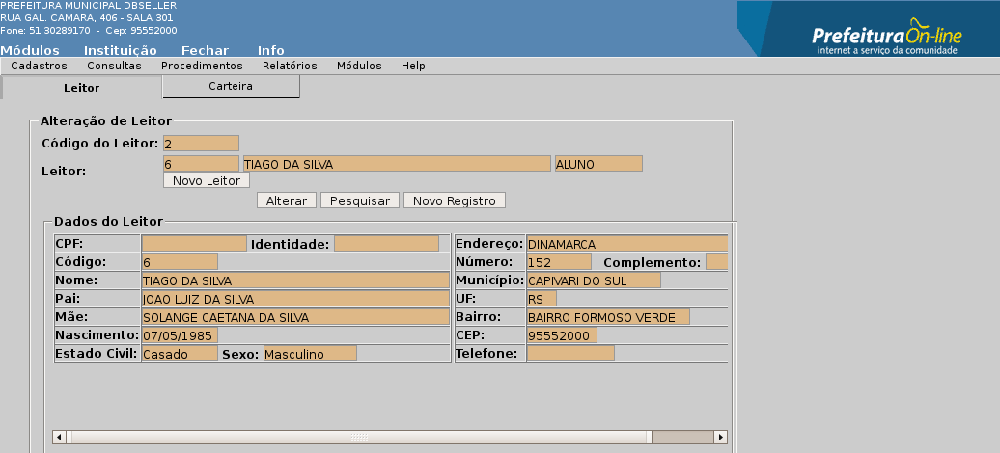
Figura
23
Obs.: Se o leitor não for encontrado na primeira pesquisa, ou este for uma pessoa nova no município e ainda não possuir cadastro, deverá então ser feito seu registro clicando no botão “Novo Leitor”, abrirá uma função de cadastro (figura 24), onde será informado os dados principais do leitor, clique em incluir, o sistema carregará os dados digitados para a página “Inclusão de Leitor” e clique em incluir(figura 23).

Figura
24
Aba Carteira:
Apenas será informado a categoria do leitor e a data de validade da carteira conforme mostra a figura 25.

Figura
25
Campos
Código: O sistema gera automaticamente.
Categoria: Ao clicar no link “Categoria”, abrirá uma função de pesquisa, busque e selecione a Categoria do leitor (figura 26).

Figura
26
Data de Inclusão: O sistema informa automaticamente a data atual.
Validade: Informe a data de validade da carteira do leitor.
Neste menu o sistema apenas irá deixar alterar o campo Categoria da aba Carteira, basta pesquisar o leitor e alterar o campo.
Ao selecionar esta consulta abrirá uma função de pesquisa (figura 27) onde aparecerá uma relação de todos os acervos cadastrados no sistema, acima desta relação existe os filtros “Código do Acervo, Título e Nome do Autor” para que você possa fazer a pesquisa do acervo. Depois de selecionar o acervo desejado, o sistema abre uma função com todos os dados cadastrais do acervo (figura 28), na relação de exemplares, a direita da tela, o sistema mostra a situação do acervo como link, ou seja, o sistema mostra se o livro esta disponível ou não, se disponível, basta dar um clique no link para ir direto para o procedimento de empréstimo ( figura 64 ).

Figura
27

Figura
28
Ao clicar no link “Autor” (figura 29), abrirá uma função de pesquisa (figura 30) com todos os autores que foram cadastrados no sistema, busque e selecione o autor que deseja, o sistema listará todos os acervos que a biblioteca possui deste autor ( figura 31), a direita da tela existe a opção “ver exemplares, basta clicar para o sistema listar todos exemplares cadastrados, mostrando também sua situação, se clicar no link “Disponível”, o sistema redirecionará a página para o procedimento de empréstimo(figura 64), conforme mostra a figura 32.
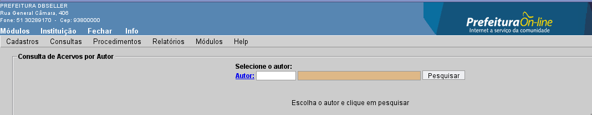
Figura
29

Figura
30

Figura
31

Figura
32
Ao selecionar esta consulta você pode pesquisar um acervo digitando apenas um termo relacionado a ele (figura 33), este termo pode ser uma palavra do título ou o assunto do acervo, ao clicar em “PESQUISAR” o sistema fará a busca e listará abaixo uma relação de todos os acervos que possuem esta termo (figura 34). O sistema também possui uma pesquisa por “Tipo de Item” e por “Classificação Literária”, onde você irá informar quais os itens ou qual a classificação literária que deseja consultar, não é obrigatório o preenchimento de todos os filtros, apenas se quiser uma consulta mais detalhada.
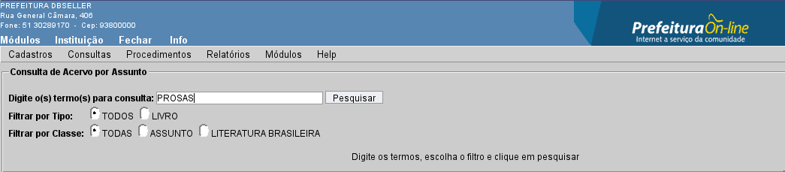
Figura
33
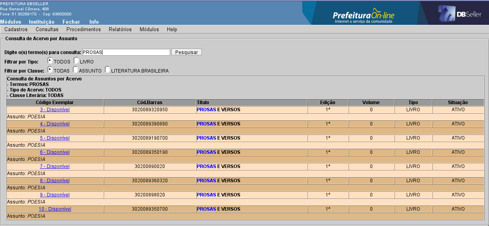
Figura
34
Nesta consulta, os campos “DATA” (figura 35) são opcionais, para consultar se um acervo esta emprestado, basta clicar no link “Código do
Acervo” (figura 27), pesquisar o acervo a ser consultado para que o sistema busque as informações, conforme mostra a figura 36.

Figura
35
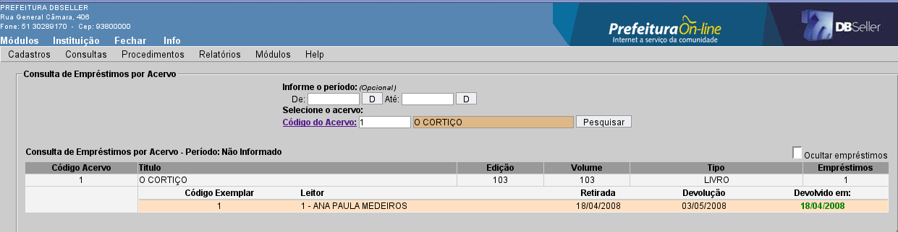
Figura
36
Nesta consulta, os campos “DATA” são opcionais, para consultar se um acervo esta emprestado, basta clicar no link “Código do Leitor”, pesquisar o leitor a ser consultado(figura 37) para que o sistema busque as informações conforme mostra a figura 38.

Figura
37

Figura
38
Ao selecionar esta consulta, o sistema automaticamente traz a relação de acervos que estão emprestados (figura 39). Nesta rotina o sistema permite consultar os dados cadastrais do leitor (figuras 23 e 25) e ao final dos registros existe o botão “DEVOLUÇÃO” onde ao clicar o sistema redireciona a página para o procedimento de devolução de acervo (figura 68), basta selecionar o acervo a ser devolvido e confirmar.

Figura
39
Ao selecionar esta consulta, o sistema automaticamente traz a relação de acervos que estão em atraso(figura 40), ao final dos registros existe o botão “DEVOLUÇÃO” onde ao clicar o sistema redireciona a página para o procedimento de devolução de acervo (figura 68), basta selecionar o acervo a ser devolvido e confirmar.
 Figura
40
Figura
40
Nesta consulta você pesquisará os leitores clicando no link “Carteira” (figura 41), abrirá uma função de pesquisa com todos os leitores que foram cadastrados no sistema (figura 37), busque e selecione o leitor que deseja pesquisar, após seleciona-lo, o sistema buscará todos os exemplares que estão emprestados para ele, conforme mostra a figura 42.

Figura
41
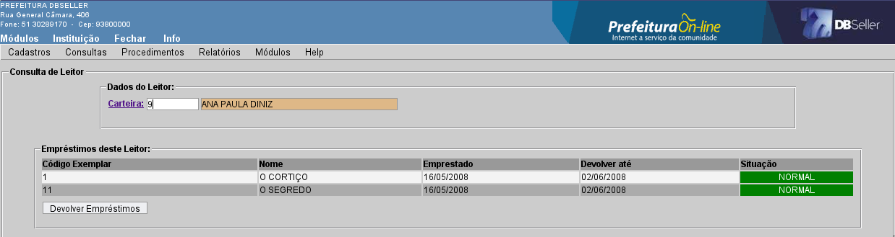
Figura
42
Nesta rotina existe o botão “DEVOLVER EMPRÉSTIMOS”, basta clicar para que o sistema redirecione a página para o procedimento de devolução de acervo (figura 68).
Para emissão deste relatório você apenas irá selecionar a ordem, se ALFABÉTICA ou NUMÉRICA (figura 43), se desejar emitir um relatório de uma categoria em específico, basta seleciona-la no campo “Filtro” e clicar em “PROCESSAR”, abrirá a página de impressão em arquivo PDF (figura 44).

Figura
43
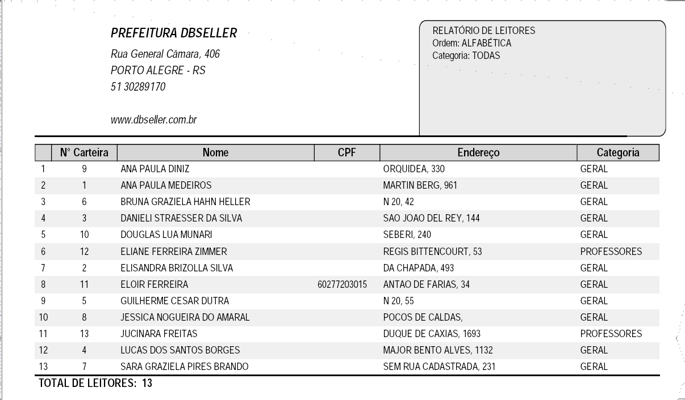
Figura
44
Para emissão deste relatório você apenas irá selecionar a ordem, se ALFABÉTICA ou NUMÉRICA (figura 45) e clicar em “PROCESSAR”, abrirá a página de impressão em arquivo PDF (figura 46).

Figura
45

Figura
46
Para emissão deste relatório você apenas irá selecionar a ordem, se ALFABÉTICA ou NUMÉRICA (figura 47) e clicar em “PROCESSAR”, abrirá a página de impressão em arquivo PDF (figura 48).

Figura
47
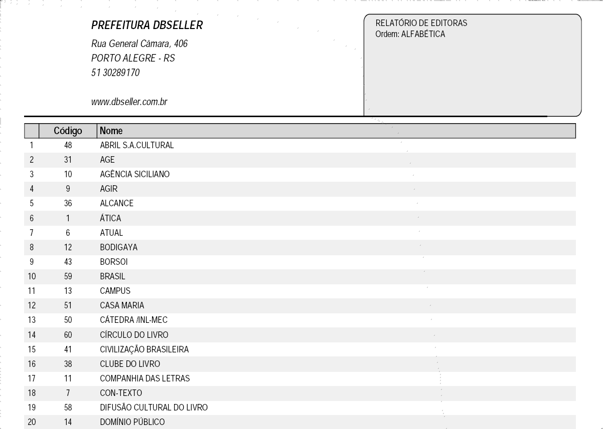
Figura
48
Para emissão deste relatório você apenas irá selecionar a ordem, se ALFABÉTICA ou NUMÉRICA (figura 49) e clicar em “PROCESSAR”, abrirá a página de impressão em arquivo PDF (figura 50).
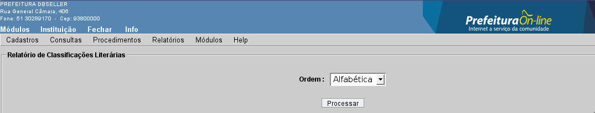
Figura
49

Figura
50
No relatório de Acervos você pode emitir um relatório dos acervos que a biblioteca possui de uma determinada editora, classificação literária, tipo de item, de uma determinada localização, de um autor, conforme mostra a figura 51, basta escolher um dos filtros para pesquisa, para emitir um relatório de todos os acervos da biblioteca basta selecionar a ordem deste relatório e se deseja um relatório resumido ou completo, clicar em “PROCESSAR”, então abrirá a página de impressão (figuras 52 e 53).

Figura
51

Figura
52
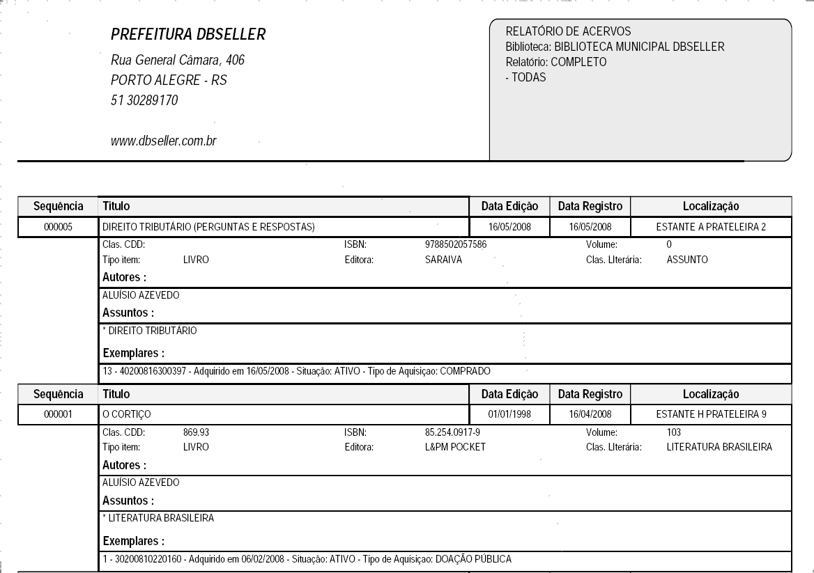
Figura
53
Neste relatório você informará a data inicial e a data final do relatório, o sistema buscará todas as informações existentes neste período, selecione o tipo de item sobre o qual quer emitir o relatório, selecionando este no campo “Filtro”, conforme mostra a figura 54, clique em “PROCESSAR” para abrir a página de impressão (figura 55).

Figura
54
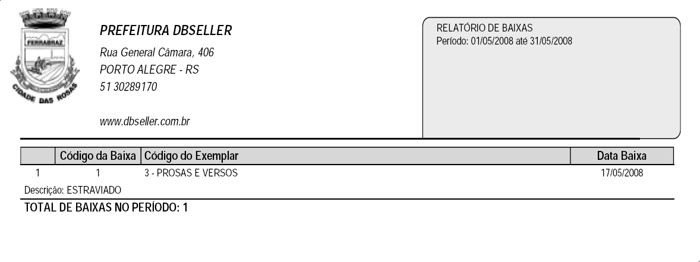
Figura
55
Informe a data inicial e a data final do relatório, o sistema buscará todas as informações existentes neste período, marque uma das opções do campo “FILTRO”, os campos “CARTEIRA” e “CÓDIGO DO ACERVO” são opcionais, podendo escolher apenas um deles para consulta, conforme mostra a figura 56. Clique em “PROCESSAR” para abrir a página de impressão (figura 57).

Figura
56

Figura
57
Informe a data inicial e a data final do relatório, o sistema buscará todas as informações existentes neste período, marque a quantidade de registros conforme mostra a figura 58 e clique em “PROCESSAR” para abrir a página de impressão (figura 59), o campo “Tipo de Item” é opcional.

Figura
58

Figura
59
Na emissão das etiquetas terá um campo com a relação de acervos cadastrados na biblioteca, selecione os acervos a terem suas etiquetas impressas, clique na seta ( > ) que existe entre os campos, se for emitir todas as etiquetas dos acervos relacionados neste campo, clique nas duas setas ( >> ), selecione o modelo de etiqueta que deseja e clique em “PROCESSAR”, conforme mostra a figura 60, em seguida abrirá a página de impressão (figura 61).

Figura
60

Figura
61
Este relatório segue a mesma lógica da emissão de etiquetas, existe dois campos, um com a relação dos leitores cadastrados na biblioteca e outro em branco, passe para o campo em branco os leitores que deseja emitir as carteiras conforme mostra a figura 62 e clique em “PROCESSAR” para abrir a página de impressão (figura 63).

Figura
62

Figura
63
Para realizar o empréstimo de um acervo, você irá consultar a carteira do leitor clicando no link “Carteira”, pesquise o nome do leitor desejado (figura 37) para que o sistema carregue os dados e gere a data da devolução . Ao clicar no link “Código do exemplar” abrirá uma função de pesquisa de exemplares (figura 65), procure o acervo que será emprestado, repita o procedimento se for emprestado mais de um acervo, se preferir pesquise os exemplares por assunto, clique em PROCESSAR, conforme mostra a figura 64. Abrirá a página de confirmação de empréstimo (figura 66), se preferir imprimir um comprovante, basta clicar em “Emitir Comprovante” e confirmar, que o sistema irá imprimi-lo em duas vias (figura 67).
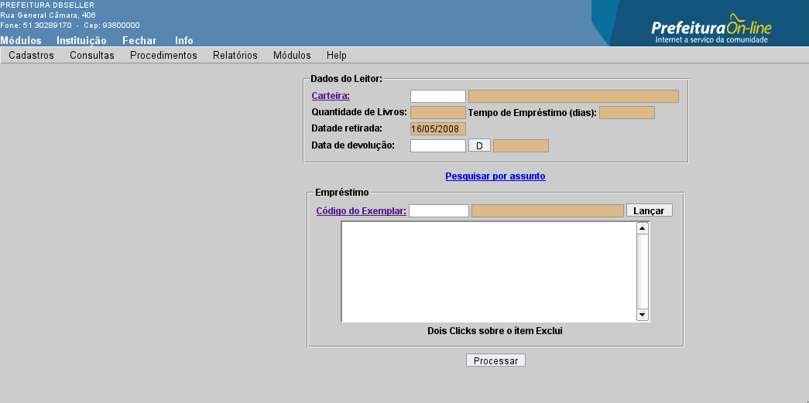
Figura
64
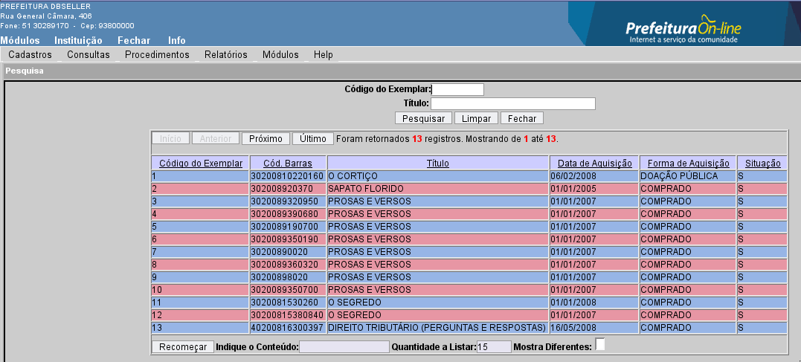
Figura
65
Figura 66
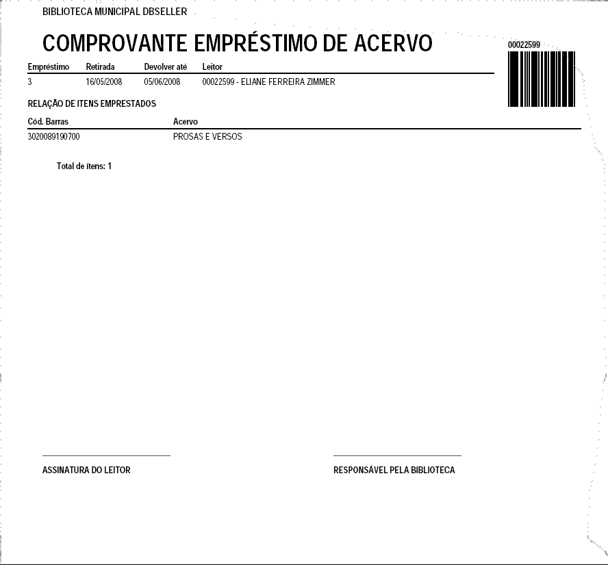
Figura
67
Na devolução do acervo você pode clicar no link “Carteira” (figura 37) ou “Código do exemplar” (figura 65), marcar o acervo que esta sendo devolvido e confirmar a devolução, conforme mostra a figura 68.

Figura
68
Na reserva do acervo você irá clicar no link “Carteira” (figura 37) para selecionar o leitor, em seguida clique em “Código do exemplar” (figura 65) e selecione o exemplar a ser reservado, informe a data e a hora para reserva e clique em “INCLUIR”, conforme mostra a figura 69.

Figura
69
Pesquise o acervo a ser baixado clicando em “Código do Exemplar” (figura 65), selecione o acervo e clique em “PRÓXIMO”(figura 70), abrirá o campo “Descrição da Baixa”, descreva o motivo da baixa do acervo e clique em incluir, conforme mostra a figura 71.
Ex.: Extraviado, rasurado, perdido e etc.
Figura
70
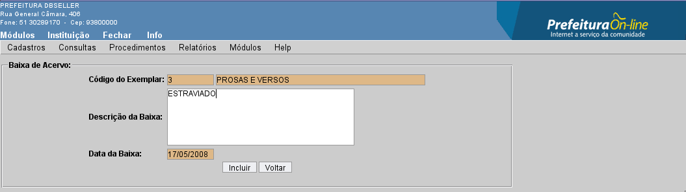
Figura
71
|
DBSeller Serviços de Informática Ltda. – www.dbseller.com.br Rua General Câmara, 406/301 – Porto Alegre/RS – Fone: (51) 3076-5101 |
versão – 2.1.80 |